Zhangyu Guan
Associate Professor
Wireless Intelligent Networking and Security Lab
Department of Computer Science & Engineering
University of Minnesota Twin Cities


Address: 5-207 Keller Hall, University of Minnesota, Minneapolis, MN 55455
Email: zguan@umn.edu

Biography | Research | Acknowledgment | Team | Publications | Service | Teaching | Links
News
July 2025: Our project “UnionLabs: Facilitating Shared Access to Heterogeneous Wireless Testbeds Through Grassroots-Driven Federation” has been awarded by the NSF CIRC program! In collaboration with the University of Florida, we aim to launch a grassroots initiative to democratize access to wireless research testbeds with a wide range of hardware resources and network environments, and to accelerate the development of an open, mature experimental ecosystem for the wireless research community. We sincerely thank the NSF and the broader community for their kind support!
June 2025: I am honored to join the Organizing Committee for IEEE INFOCOM 2026, which will be held from May 19 to 22, 2026, in Tokyo, Japan, and to serve as a Demo/Posters Co-Chair.
May 2025: Congratulations to WINGS Lab undergraduate students Yijie Yin and Yuanzangnan Gao on their admissions to prestigious graduate programs! Yijie has been admitted to the Master’s program at the University of Pennsylvania, and Yuanzangnan has been admitted to Waseda University in Japan.
May 2025: Dr. Maxwell McManus will join the WINGS Lab as a Senior Research Engineer starting June 1, 2025. He will lead our research efforts in domain adaptation for intelligent unmanned aerial systems.
April 2025: I am honored to receive the Senior Teacher of the Year Award from the School of Engineering and Applied Sciences (SEAS) at the University at Buffalo.
Dec. 2024: Congratulations to Tenzin Rinchen for joining Google as a Cloud Consultant for Application Modernization.
Dec. 2024: Congratulations to Shreshta Shekar and Sindhu Thukkamuthu! Shreshta will join the Silicon Design Team at AMD as a Software Engineer, and Sindhu will join Synopsys Inc as an ASIC Physical Design Engineer.
Biography
I am an Associate Professor in the Department of Computer Science and Engineering at the University of Minnesota, Twin Cities, starting August 2025. Prior to this, I was an Associate Professor in the Department of Electrical Engineering at the University at Buffalo. I received my Ph.D. in Communication and Information Systems from Shandong University, China, in 2010. From 2009 to 2010, I was a visiting Ph.D. student at the University at Buffalo, where I later worked as a Postdoctoral Research Associate from 2012 to 2015. Between 2015 and 2018, I was an Associate Research Scientist in the Department of Electrical and Computer Engineering at Northeastern University in Boston. I am the Director of the Wireless Intelligent Networking and Security (WINGS) Lab. My research interests include zero-touch computing and networking, space-air-ground integrated networking, wireless network security, and software and testbed infrastructure for future networks.
Current Research Areas
| 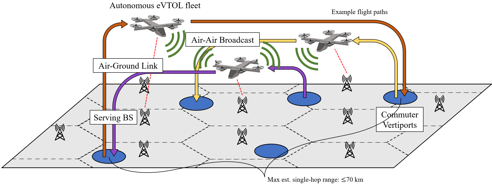 |
 |
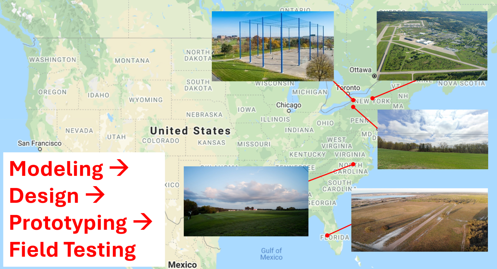 |
| 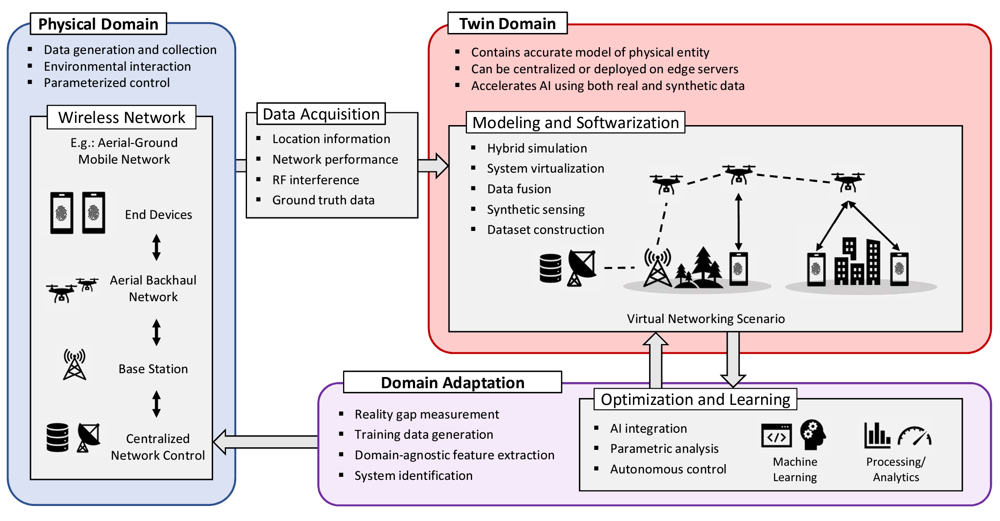 |
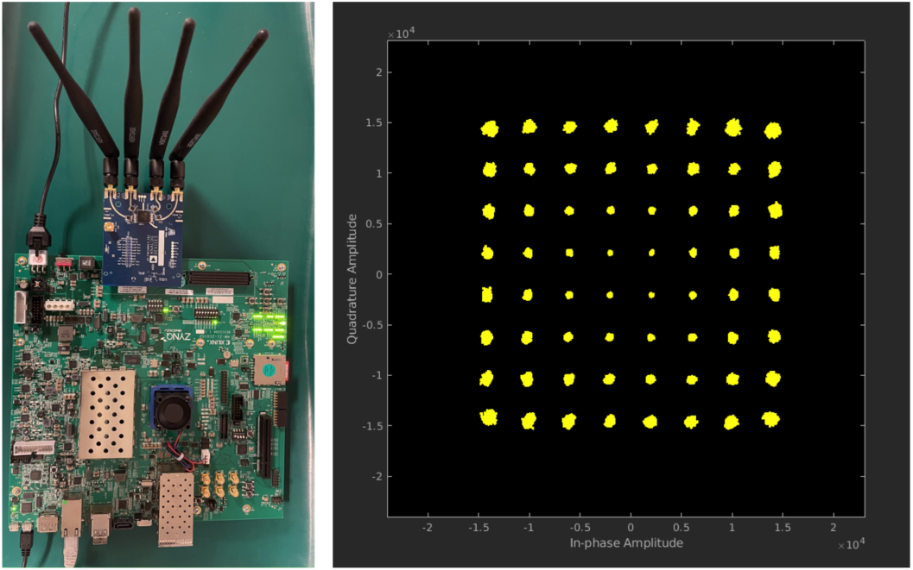 |
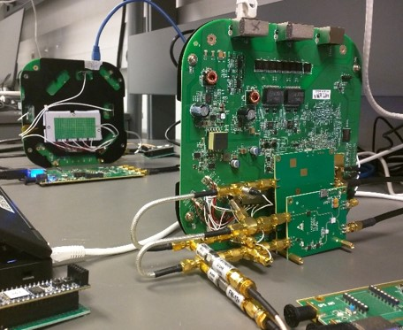 |
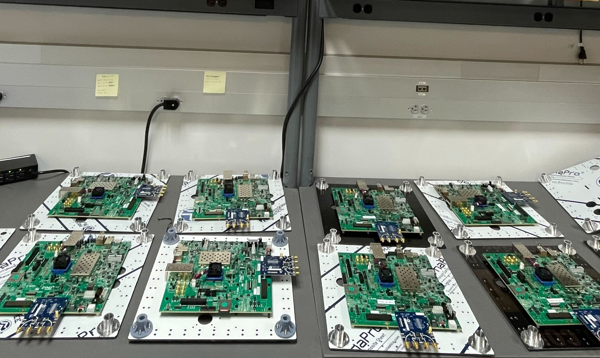 |
|
Experimentation and Softwarization for Future Wireless Networks
|
|||
| 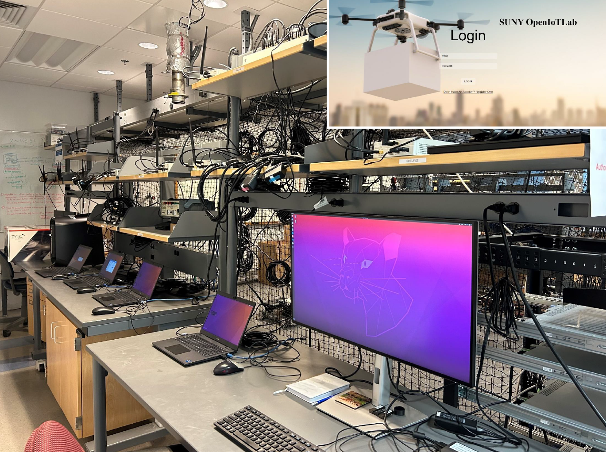 | 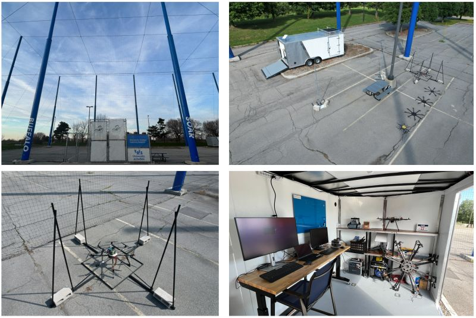 | 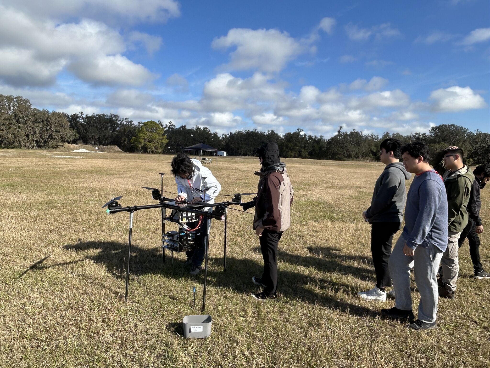 | |
|
UAV Design, Fabrication, Testing and Optimization
|
||||

|

|
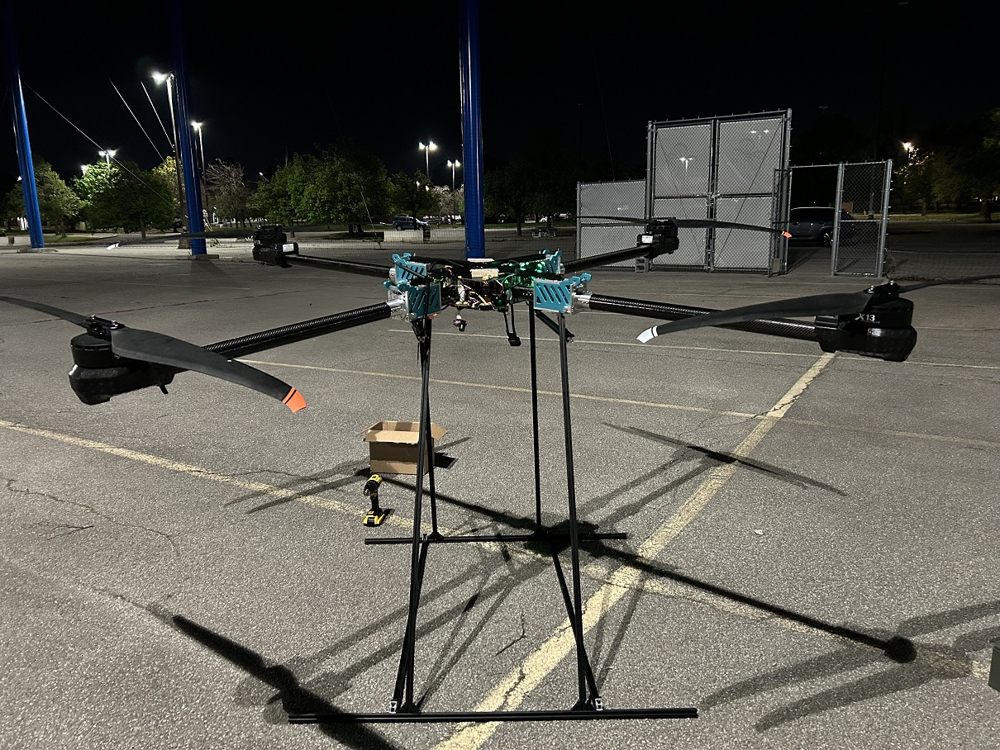 | 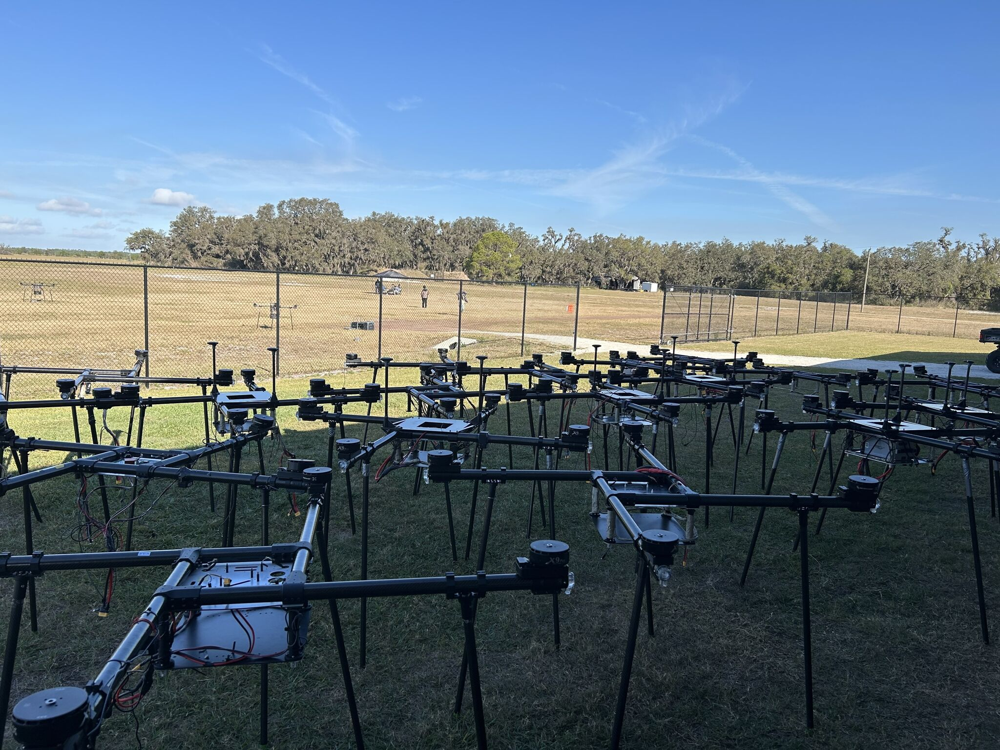 | 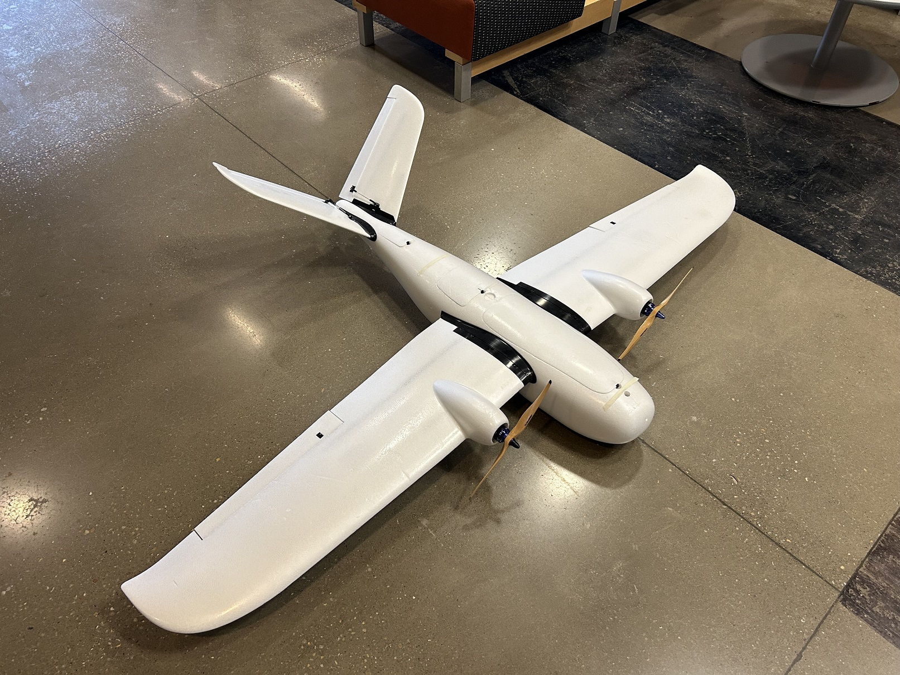 |
|
Printable Circuits for Chip-based and Chipless RFID
Design flexible and scalable RFID prototyping methods based on conductive thermal transfer printing technology, and enhance the reading range and coverage based on advanced radio frequency signal sensing and processing as well as communication techniques. |
|||
|
|
|
|
|
Acknowledgment


Team
Current Team
| Maxwell McManus [Website] Senior Research Engineer (Started June 2025) Ph.D. Graduate (Jan. 2020 - May 2025, NDSEG Fellow) |
|
| Yuqing Cui [Website] Ph.D. Student (Started Jan. 2023) Science, Mathematics, and Research for Transformation (SMART) Scholarship |
|
| Josh (Zhaoxi) Zhang [Website] Ph.D. Student (Started Jan. 2023) Co-advised with Dr. Nick Mastronarde |
|
| Sidharth Santhinivas [Website] Ph.D. Student (Started Jan. 2023) |
|
| Annoy Dey Ph.D. Student (Started Jan. 2025) |
|
| Chenzhi Zhao Ph.D. Student (Starting August 2025) |
|
| Albert Wain Undergraduate Student |
WINGS Alumni
| Yijie Yin Undergraduate Student (Graduated May 2025) ⟹ Master Student at University of Pennsylvania |
|
| Yuanzangnan Gao Undergraduate Student (Graduated May 2025) ⟹ Master Student at Waseda University, Japan |
|
| Tenzin Rinchen Research Assistant (Feb. 2023 - Dec. 2024) |
|
| Sindhu Thukkamuthu Research Assistant (Feb. 2024 - Dec. 2024) ⟹ Synopsys |
|
| Shreshta Sheker Research Assistant (Feb. 2024 - Dec. 2024) ⟹ AMD |
|
| Dave Satterlee Software Engineer VOCAL technologies |
|
| Jiangqi Hu [Website] Ph.D. Graduate (Graduated May 2024) ⟹ Tenure-track Assistant Professor at Eastern New Mexico University |
|
| Yixiao Shang Undergraduate Student (Graduated May 2024) ⟹ Master Student at University of Southern California |
|
| Xiaohong Guo Undergraduate Student (Graduated May 2024) ⟹ Master Student at Georgia Institute of Technology |
|
| Shashank Pagidimarri M.S. Student (Graduated Dec. 2023) ⟹ Research Foundation of City University of New York |
|
| David Bone M.S. Student (Graduated Dec. 2023) US Air Force Research Laboratory (AFRL) |
|
| Shaik Mohammed Suhail Research Assistant (Graduated Dec. 2023) ⟹ ANDRO Computational Solutions |
|
| Sabarish Krishna Moorthy [Website] Ph.D. Graduate (Graduated May 2023) ⟹ ANDRO Computational Solutions |
|
| Haolun Li M.S. Student (Graduated May 2023) ⟹ ANDRO Computational Solutions |
|
| Zhiyuan Zhao M.S. Student (Graduated May 2023) ⟹ Northrop Grumman |
|
| Ishita Dhopeshwar M.S. Student (Graduated Dec. 2022) ⟹ Tarana Wireless |
|
| Ranjith Samuel Suresh Kumar M.S. Student (Graduated Dec. 2021) ⟹ Viridi |
|
| Ankush Hari M.S. Student (Graduated May 2021) ⟹ Qualcomm |
|
| Chencheng Lu M.S. Student (Graduated May 2021) ⟹ Automotive Robotics |
Publications
Journal and Magazines
|
Conference Papers
|
Intellectual Property - Patents
|
![[Certificate]](./guan_files/rfidpatent.jpg){kind=link}
Service
Conference Organizations
Journal Editorship
TPC Member
Reviewer
Proposals: SUNY IITG - Innovative Instructional Technology Grants, NSF Review Panelist, NIST
IEEE Journals: IEEE Communications Surveys & Tutorials, IEEE Communications Magazine, IEEE Wireless Communications Magazine, IEEE Network Magazine, IEEE Journal on Selected Areas in Communications (JSAC), IEEE/ACM Transactions on Networking, IEEE Transactions on Communications, IEEE Transactions on Wireless Communications, IEEE Transactions on Multimedia, IEEE Transactions on Circuits and Systems for Video Technology, IEEE Transactions on Image Processing, IEEE Transactions on Signal Processing, IEEE Transactions on Mobile Computing, IEEE Transactions on Parallel and Distributed Systems, IEEE Transactions on Computers, IEEE Transactions on Vehicular Technology, IEEE Transactions on Industrial Informatics, IEEE Systems Journal, IEEE Wireless Communications Letters, IEEE Communications Letters
Elsevier Journals: Elsevier Journal on Ad Hoc Networks, Elsevier Journal on Computer Networks, Elsevier Journal of Network and Computer Applications, Elsevier Journal of Image Communication
Wiley Journals: International Journal of Communication Systems, Transactions on Emerging Telecommunications Technologies
Conferences: INFOCOM, ICDCS, SECON, ICC, GLOBECOM, WUWNet, PIMRC, NTMS, MILCOM, WCNC, VTC, Med-Hoc-Net, MSN, Networking